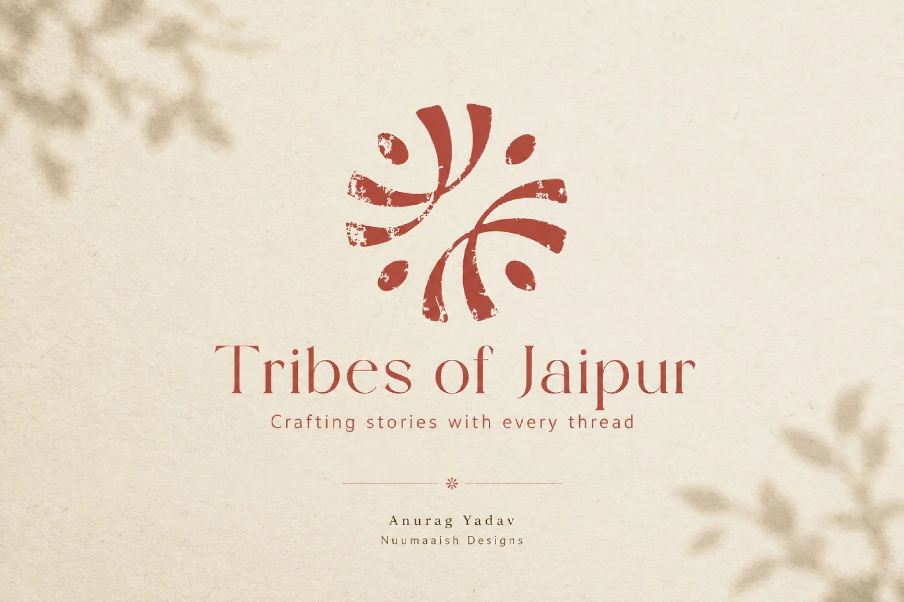
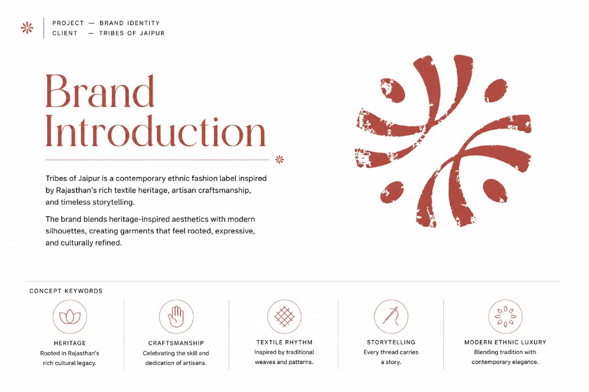
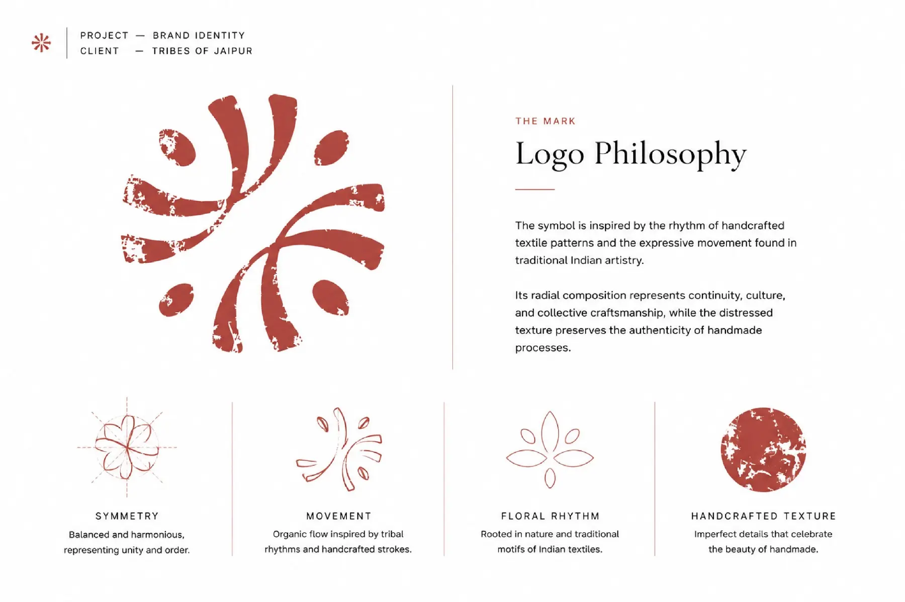
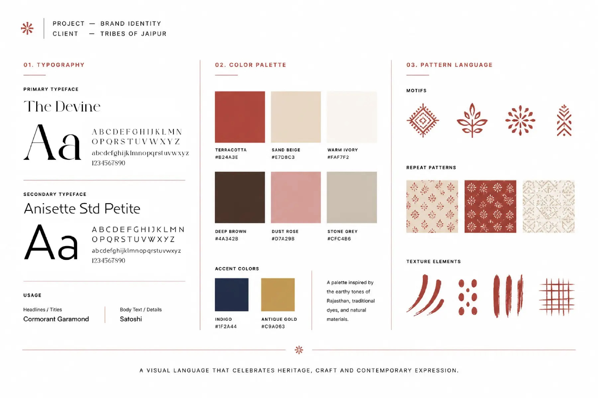
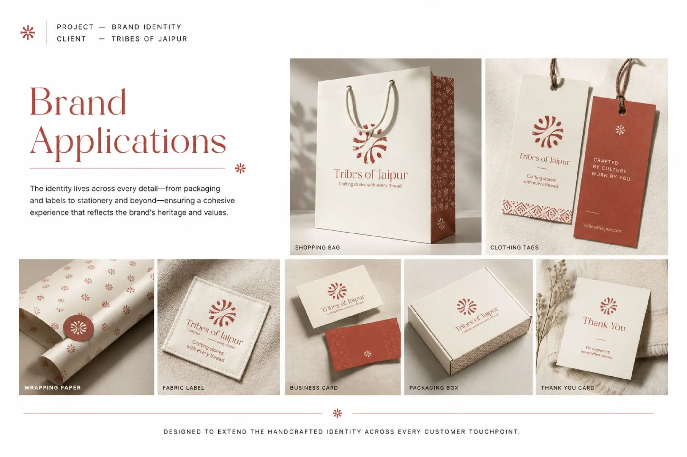
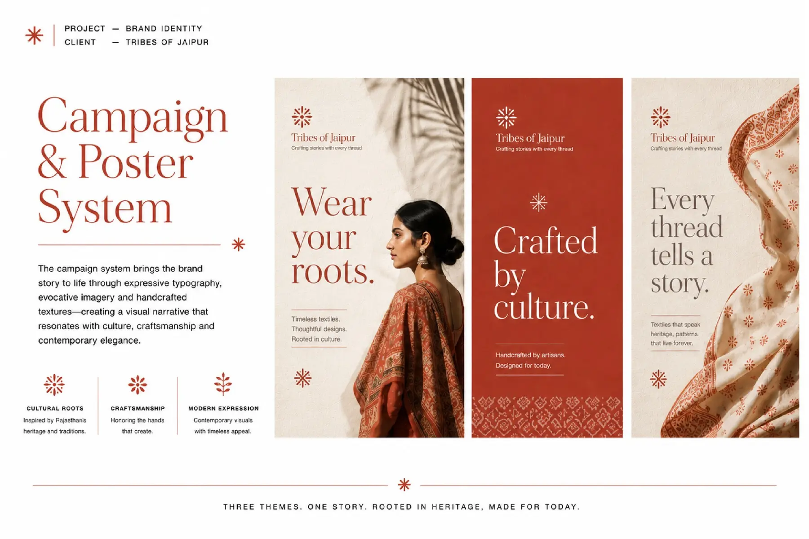
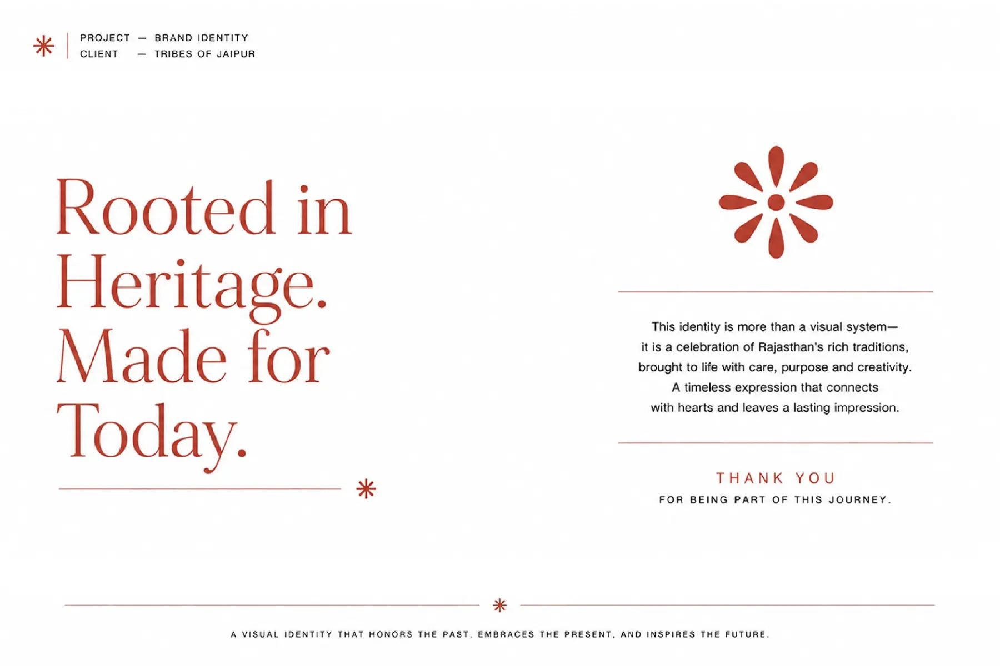

Tribes of
Jaipur
A contemporary identity and content world for an ethnic fashion label—rooted in Rajasthan’s craft language and expressed for today’s audience.
- Role
- Brand & Content Designer
- Scope
- Identity to social execution
- Craft
- Design, shoot & edit
- Output
- Digital, print & video

Heritage, interpreted—not imitated.
The identity translates the rhythm of block printing, floral forms and handcrafted imperfection into a flexible visual system. It feels rooted in Rajasthan without becoming ornamental or nostalgic.
Visible human character in every mark.
Pattern and repetition create recognition.
A contemporary canvas lets the story breathe.



From the label in the garment to the story in the feed, the identity stays recognisable without repeating itself.
Designed to live beyond the logo.
Packaging, labels and campaign layouts extend the handcrafted character across the customer journey. A modular poster system gives every collection its own voice while keeping the brand unmistakably consistent.



Shot in the moment.
Shaped in the edit.
I shoot on iPhone to keep the content immediate and authentic, then craft each film in Adobe Premiere Pro and After Effects—refining pace, transitions, sound and motion for social-first storytelling.